1 З чого почати
MoneyMe відкривається у браузері. Встановлювати нічого не потрібно.
- Відкрийте застосунок: двічі клацніть файл
MoneyMe.html(або зайдіть за посиланням, якщо він розміщений онлайн). - Створіть свій перший рахунок (готівка чи картка) і вкажіть, скільки грошей на ньому зараз.
- Додавайте витрати та надходження — баланс рахунків рахуватиметься сам.
- Час від часу робіть Експорт у файл (Налаштування) — це ваша резервна копія.
2 Знайомство з екраном
Угорі (на телефоні — можна знизу) розташоване меню-стрічка з розділами. Перший екран — Огляд: тут загальний баланс, курси валют, нагадування та останні операції. Дві великі кнопки − Витрата і + Надходження дають додати запис в один дотик.
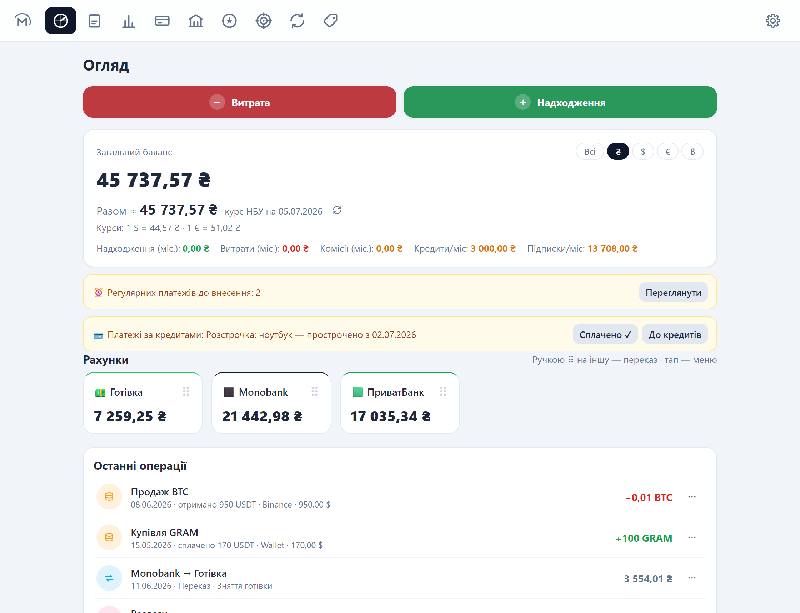
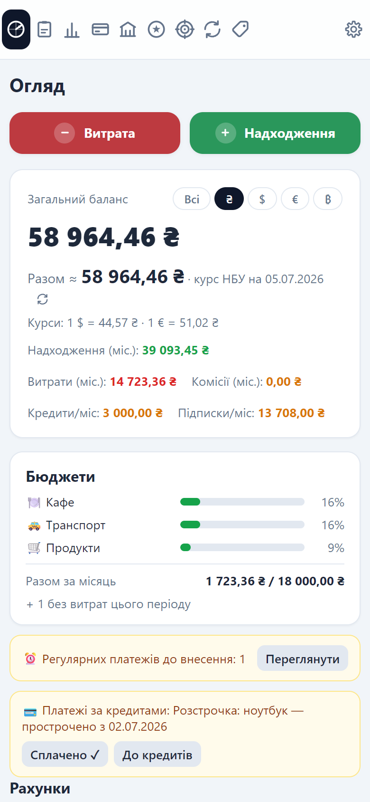
Навігація
- Іконки меню вгорі перемикають розділи: Огляд, Операції, Рахунки, Аналітика, Категорії, Цілі, Крипто, Регулярні, Кредити, Налаштування.
- На телефоні розділи можна також гортати свайпом вліво/вправо.
- Значок ⚙️ справа — це Налаштування.
- Зайві розділи можна сховати в Налаштуваннях (тоді вони будуть під кнопкою «…»).
3 Рахунки
Рахунок — це місце, де лежать гроші: готівка в гаманці, картка банку, рахунок у банку. У кожного рахунку є тип, валюта, стартовий залишок, колір та іконка.
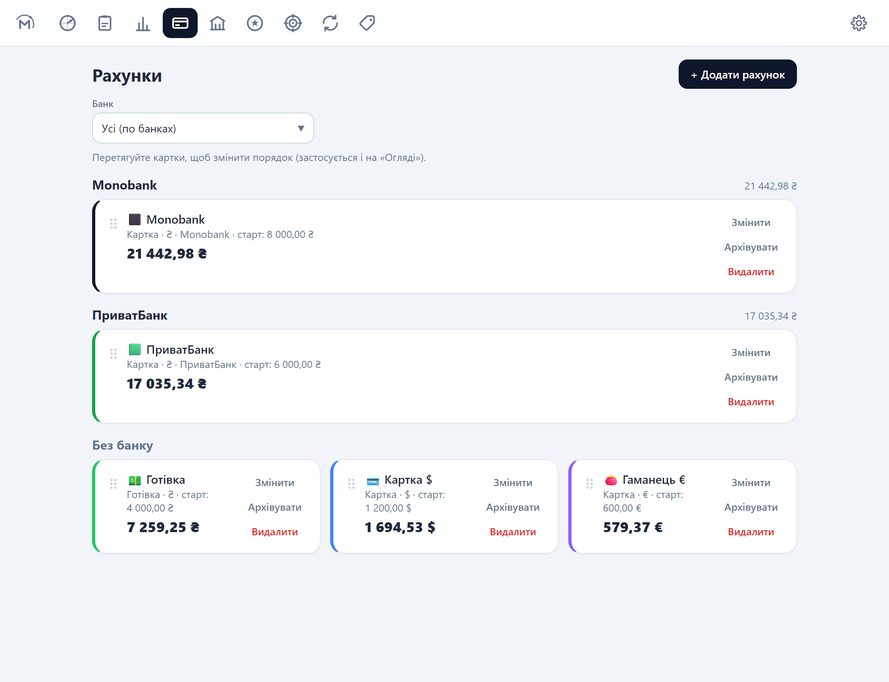
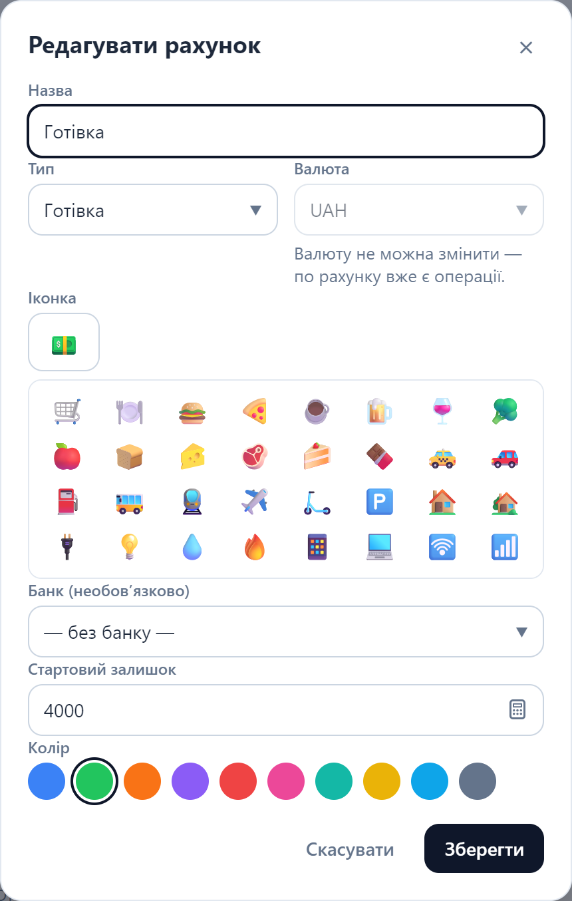
Як додати рахунок
- Відкрийте розділ Рахунки → «+ Додати рахунок».
- Виберіть тип: Готівка, Картка або Банк.
- Виберіть валюту: ₴ UAH, $ USD, € EUR, zł PLN, £ GBP.
- Вкажіть стартовий залишок — скільки грошей зараз на цьому рахунку.
- За бажання — оберіть іконку 🟢 та колір.
4 Витрати й надходження
Є три типи записів: − Витрата + Надходження ⇄ Переказ
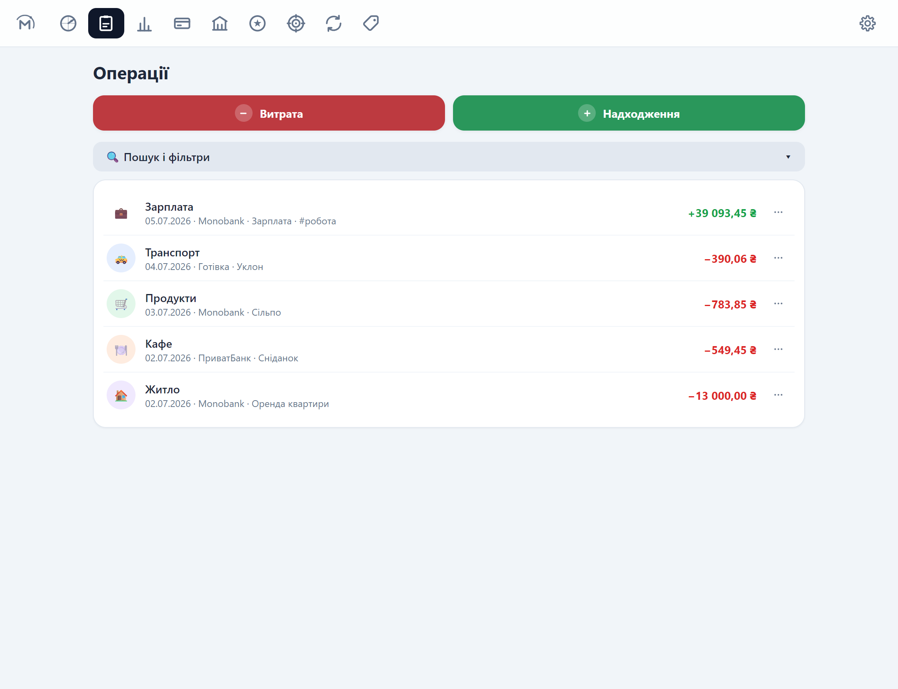
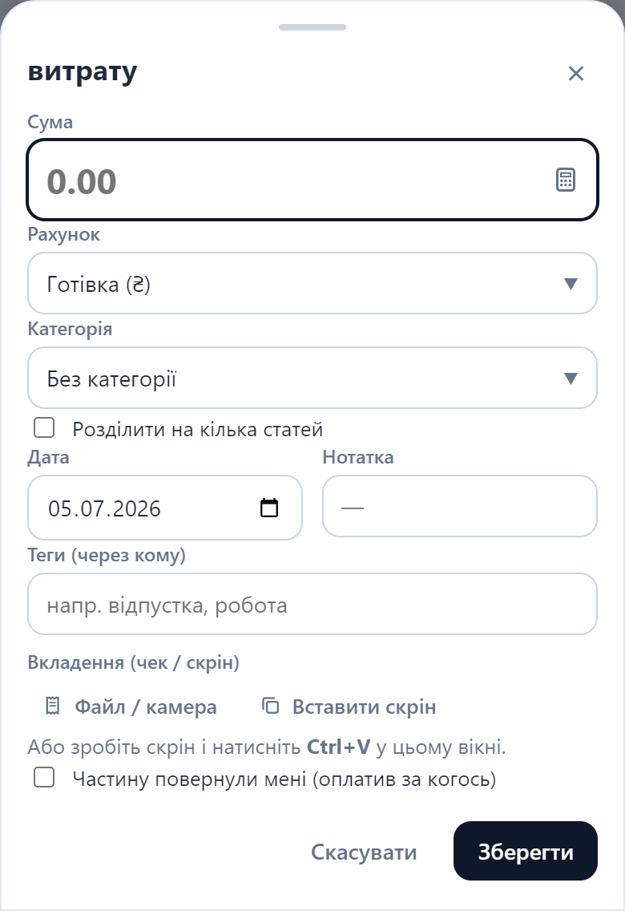
Додати витрату або надходження
- На Огляді натисніть − Витрата або + Надходження (або зайдіть у розділ Операції).
- Вкажіть суму. У поле суми можна вписати навіть приклад —
150+80— і застосунок порахує сам (значок 🧮). - Виберіть рахунок і категорію (статтю).
- За потреби змініть дату, додайте нотатку, теги чи фото чека.
- Натисніть Зберегти.
Що можна зробити з операцією
У списку операцій кнопка «⋯» (або подвійний клік по рядку) відкриває дії: Переглянути, Редагувати, Дублювати, Видалити.
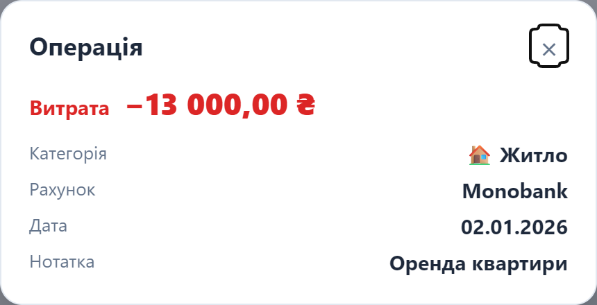
5 Розбиття та повернення коштів
✂️ Розбити на кілька статей
Один чек — кілька категорій? У формі витрати ввімкніть «Розділити на кілька статей» і додайте рядки: кожен зі своєю категорією та сумою. Загальна сума порахується автоматично.
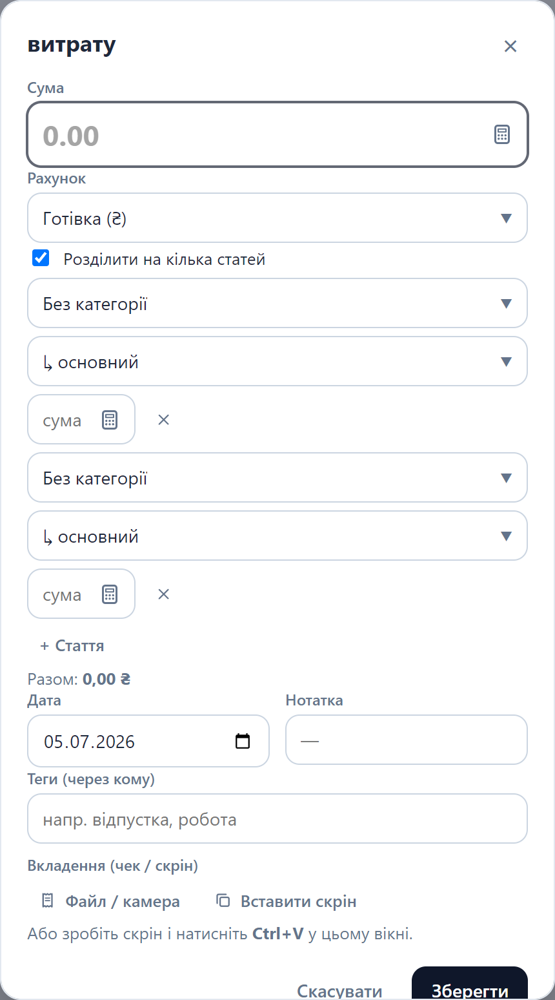
↩ Частину повернули мені
Заплатили за компанію, а вам повертають частину? Увімкніть «Частину повернули мені (оплатив за когось)» і вкажіть, скільки повернули. У вашу категорію/бюджет піде лише ваша частка (повна сума мінус повернення), а повернення запишеться окремою операцією.
Гроші повертають на різні рахунки? Додайте кілька рядків повернення (кнопка «+ Ще повернення») — кожен на свій рахунок.
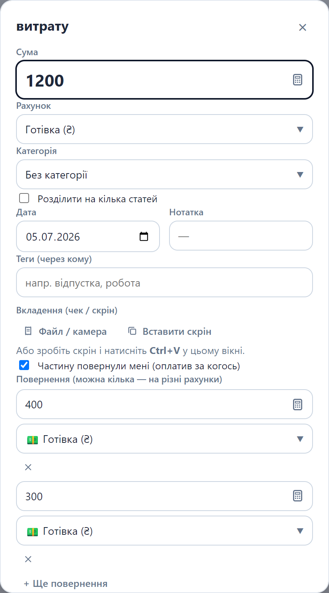
6 Перекази між рахунками
Переказ — це переміщення грошей з одного вашого рахунку на інший (наприклад, зняли готівку з картки). Це не витрата — загальний баланс не зменшується (хіба що на комісію).
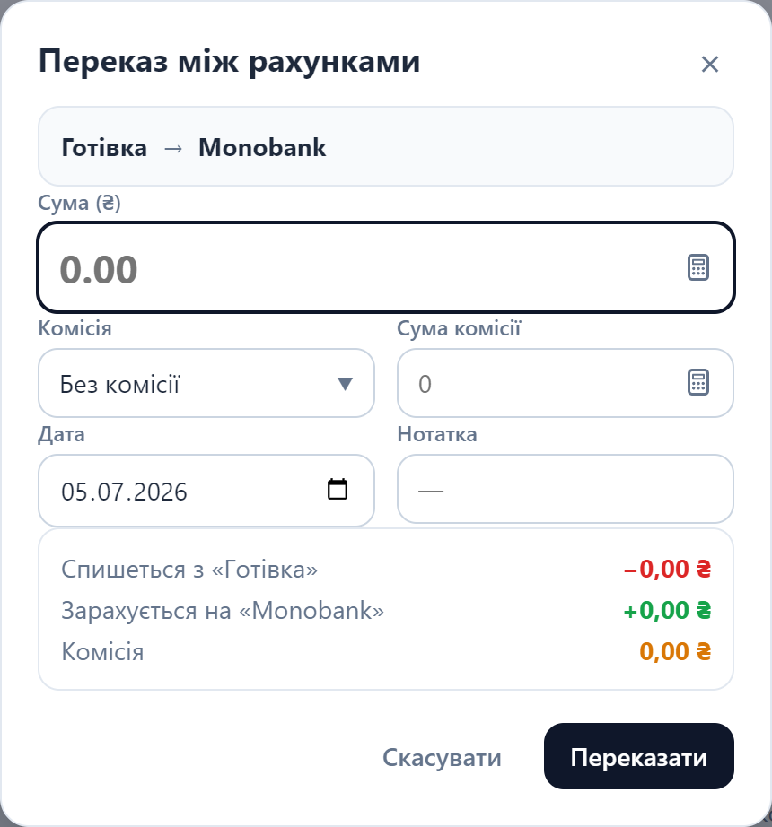
Як зробити переказ
- Найшвидше: на Огляді перетягніть картку одного рахунку на інший (за значок ⠿).
- Вкажіть суму.
- Якщо валюти різні — введіть курс (скільки одиниць призначення за одиницю джерела); сума на іншому рахунку порахується сама.
- Якщо банк бере комісію — оберіть відсоток (%) або фіксовану суму.
7 Категорії та бюджети
Категорії (статті) — це на що ви витрачаєте чи звідки отримуєте гроші: продукти, транспорт, зарплата тощо. Кілька базових створено одразу, решту додаєте самі. Перемикач «Витрати / Надходження» угорі показує потрібний список.
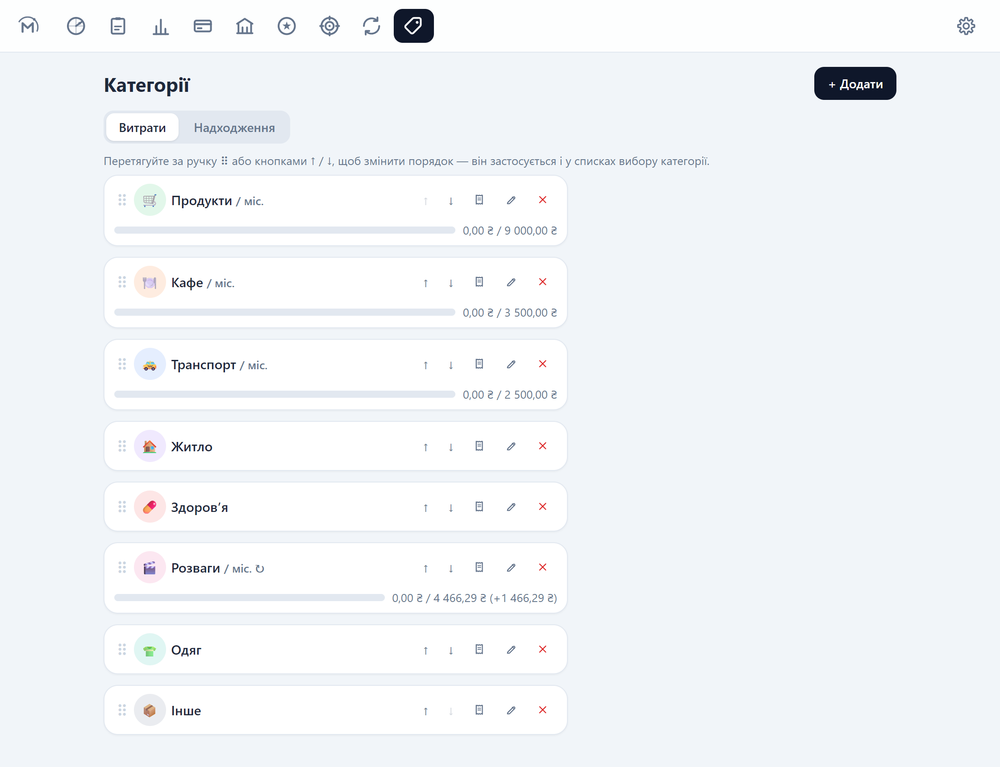
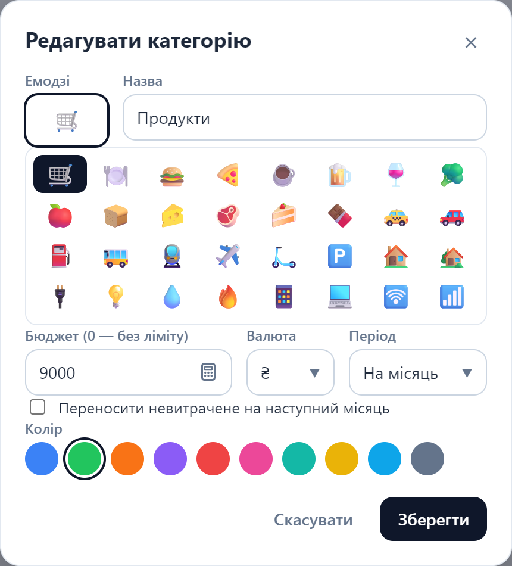
Бюджет на категорію
- Категорії → відкрийте (олівець ✎) витратну статтю.
- Вкажіть суму бюджету та період: місяць або рік.
- За потреби задайте валюту бюджету (можна в $/€ — порівняння буде в гривневому еквіваленті).
- Увімкніть «Переносити невитрачене» (↻), якщо хочете, щоб залишок місяця додавався до наступного.
9 Аналітика
Розділ Аналітика показує, куди йдуть гроші. Угорі оберіть період: Цей місяць / Минулий / Рік / Усе або власний діапазон дат.
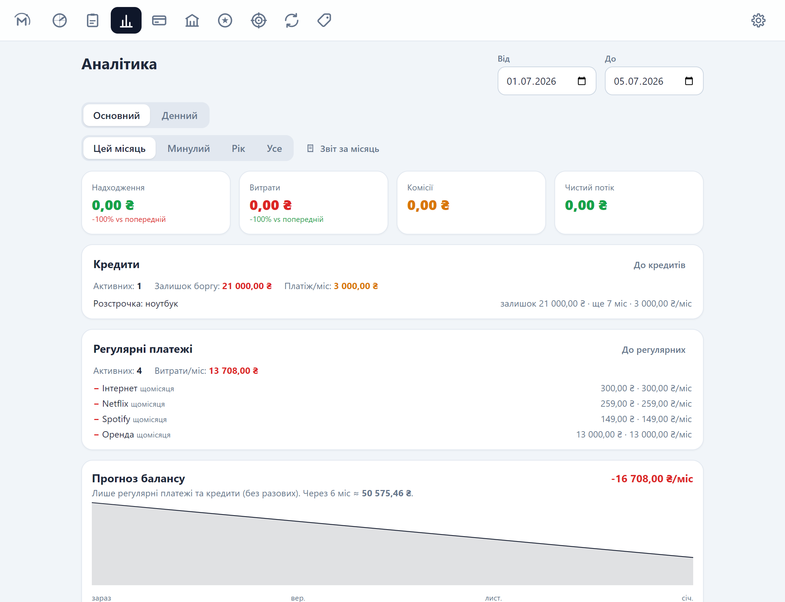
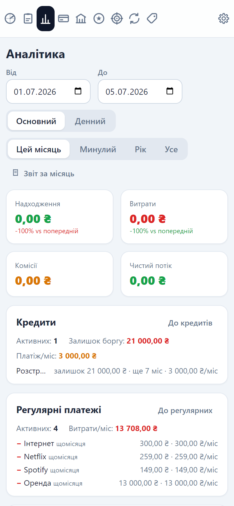
- Зведення за період — надходження, витрати, комісії окремо та чистий потік. Під сумою — «% vs попередній» (порівняння з минулим таким самим періодом; наведіть — і побачите дати й суму того періоду).
- Бюджети за період — скільки з ліміту вже витрачено (з реальними сумами).
- Витрати/доходи за статтями — кругові діаграми з розкладкою по категоріях.
- Прогноз балансу та чисті активи — куди рухаються гроші з урахуванням регулярних платежів і кредитів.
Звіт «Денний»
Перемикач «Основний / Денний» дає розбивку витрат по днях зі стовпчиковим графіком і фільтром за статтею. Подвійний клік по дню розгортає список усіх витрат того дня.
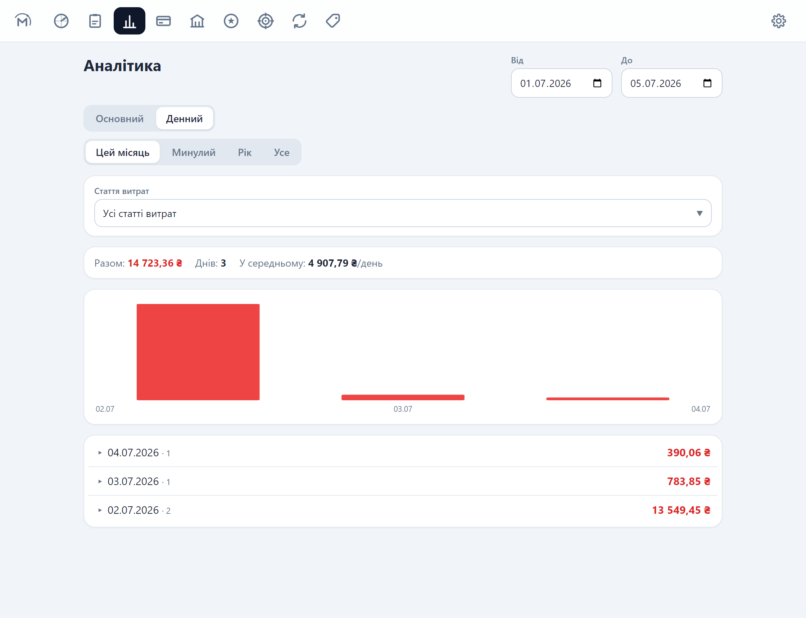
10 Крипто-портфель
Розділ Крипто веде облік ваших монет. Ціни підтягуються з інтернету (CoinGecko), коли є мережа; для рідкісних монет ціну можна вписати вручну.
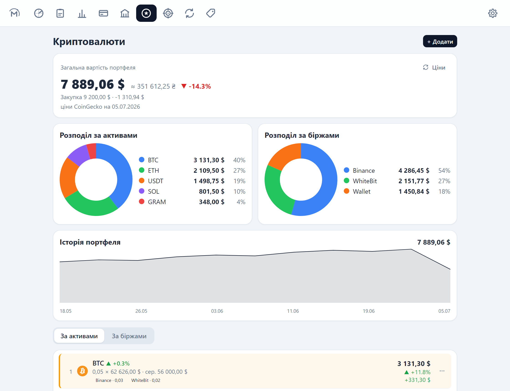
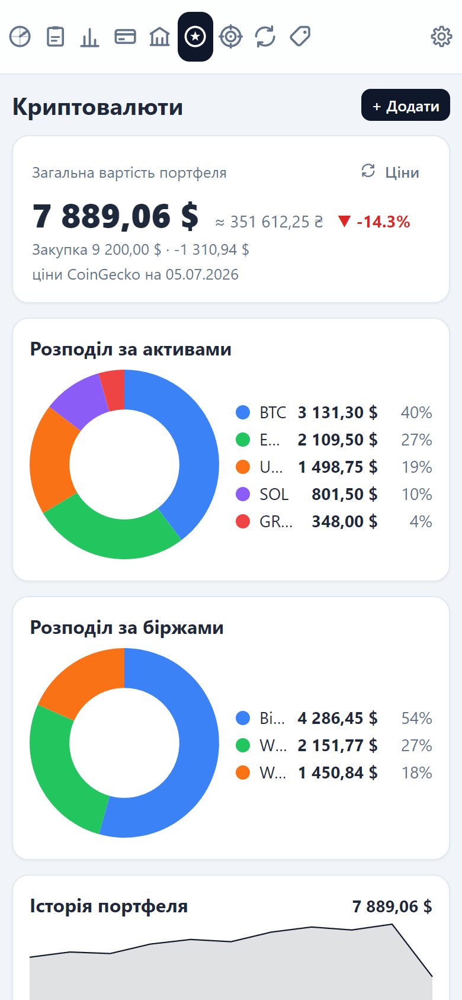
- Додати актив: символ (BTC, ETH…), кількість, за бажання — ціну закупки (тоді рахується прибуток/збиток P&L) та біржі/гаманці, де він лежить.
- Купівля / продаж (у меню «⋯» активу) фіксують зміну кількості.
- Діаграми показують розподіл за активами й за біржами, а графік — історію вартості портфеля.
- Чіп ₿ на Огляді додає крипту (в еквіваленті) до загального балансу.
11 Цілі
Цілі — це накопичення на щось конкретне (відпустка, техніка, подушка безпеки). Задаєте назву, цільову суму й, за бажання, дедлайн — застосунок порахує, скільки треба відкладати щомісяця.
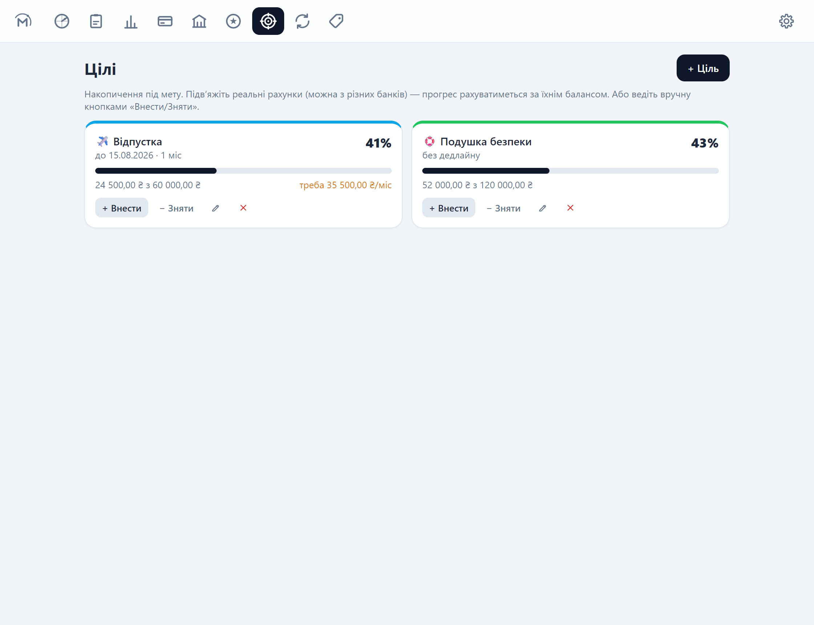
- Прив'язати до рахунку(ів): тоді накопичене рахується автоматично як баланс цих рахунків, а кнопка «↑ Поповнити» робить переказ на ціль.
- Без прив'язки: користуйтесь кнопками «+ Внести» / «− Зняти» вручну.
12 Регулярні платежі
Підписки й повторювані платежі (інтернет, стрімінги, оренда). Задаєте суму, частоту (щотижня / щомісяця / щокварталу / щороку) і дату наступного списання.
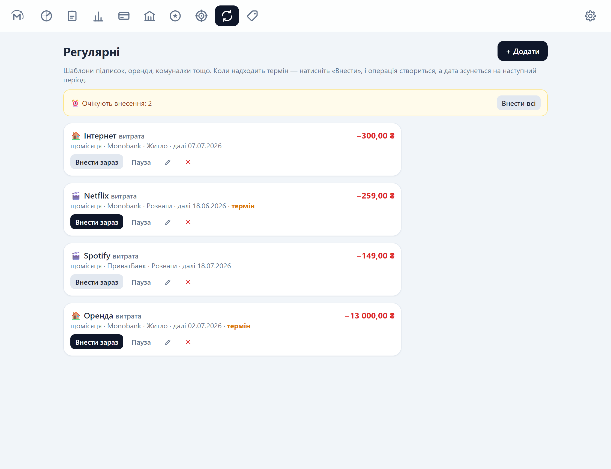
- Коли настає час — на Огляді з'являється нагадування, а прострочені підсвічуються.
- Кнопка «Внести зараз» створює операцію й переносить дату на наступний період.
- «Пауза» тимчасово вимикає платіж без видалення.
13 Кредити
Розділ Кредити веде облік боргів і кредитних лімітів. Спочатку додається банк (з кредитним лімітом), а всередині нього — кредити (тіло, строк, ставка, дата платежу).
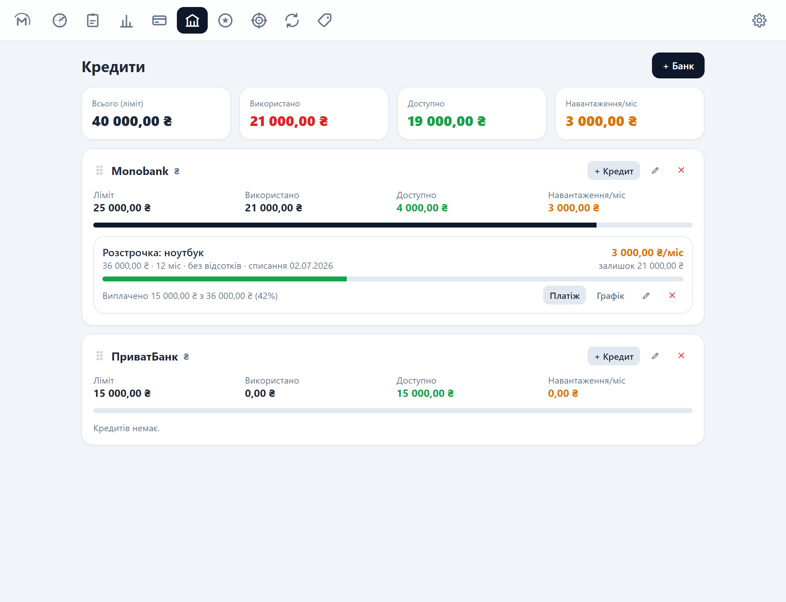
- Платіж — записує черговий платіж (сума підставляється автоматично) і зменшує залишок боргу.
- Достроково — калькулятор дострокового погашення.
- Графік — розклад платежів (тіло + відсотки).
- Угорі видно зведення: ліміт, використано, доступно, платіж на місяць.
14 Синхронізація ПК ↔ телефон
Щоб одні й ті самі дані були і на комп'ютері, і на телефоні, застосунок уміє синхронізуватися через ваш Google Drive. Дані зберігаються у прихованій папці застосунку — ні застосунок, ні хтось інший не бачить решту вашого Drive.
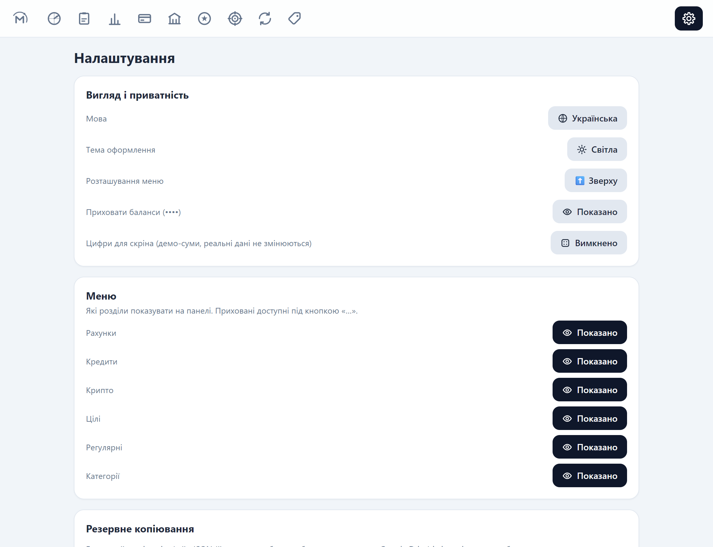
https://…
(розміщений онлайн, наприклад на GitHub Pages), а не з файлу подвійним клацанням. Це обмеження
безпеки Google.Коротко, що зробити
- Розмістити застосунок онлайн (безкоштовно — GitHub Pages).
- Створити безкоштовний Google OAuth Client ID у Google Cloud Console.
- У Налаштування → Синхронізація натиснути «Підключити Google Drive» і увійти в акаунт.
- Те саме зробити на телефоні з тим самим акаунтом — і дані почнуть синхронізуватися автоматично.
SETUP.md поряд із застосунком.
Синхронізація працює за принципом «кожен пристрій пише своє», тож дані не конфліктують і не
затираються.15 Бекап і безпека даних
| Інструмент | Що робить |
|---|---|
| Експорт у файл | Зберігає всі дані у файл JSON. Тримайте його в надійному місці. |
| Зашифрований | Те саме, але під паролем (працює лише в онлайн-версії). |
| Операції в CSV | Вивантажує операції таблицею для Excel / Google Таблиць. |
| Імпорт із файлу | Відновлює дані з файлу. Замінює поточні дані застосунку. |
| Точки відновлення | Раз на день застосунок сам зберігає знімок стану (до 7 останніх) — можна відкотитися одним кліком. |
| Версії в Drive | Якщо ввімкнено синхронізацію — щоденні копії в хмарі, які теж можна відновити. |
16 Вигляд, мова та застосунок на телефоні
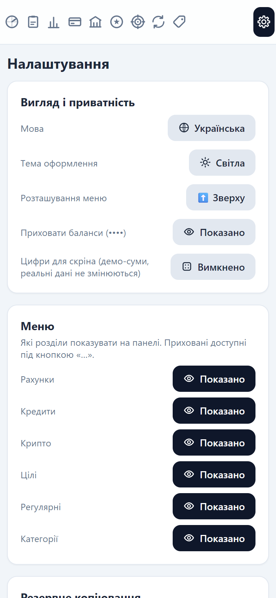
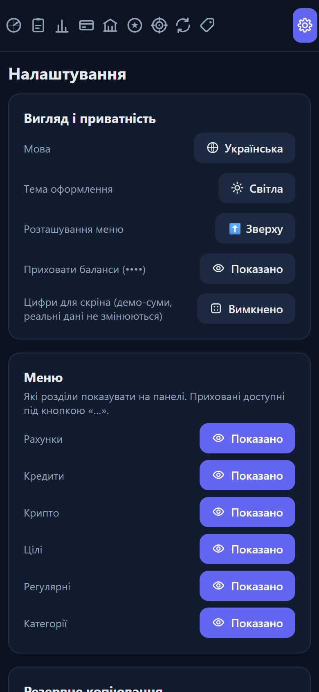
- Тема — світла або темна (зручно ввечері).
- Мова — Українська / English.
- Позиція меню — зверху чи знизу (для великих телефонів зручніше знизу).
- Ховати суми — замість цифр показує «•••», щоб ніхто не підгледів баланс.
- Режим скріншотів — тимчасово підмінює суми випадковими, щоб безпечно поділитися екраном.
- Розділи меню — які вкладки показувати, а які сховати.
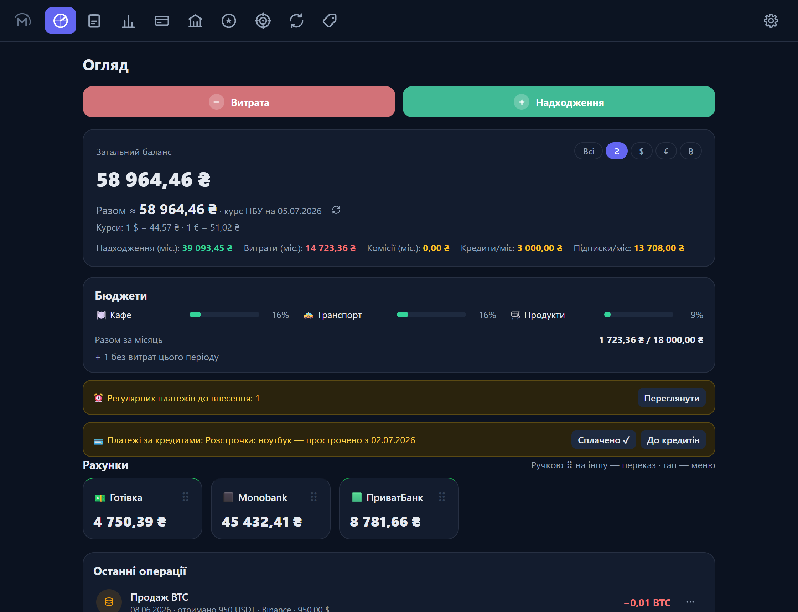
📲 Встановити як застосунок (PWA)
Якщо MoneyMe відкрито онлайн, його можна «встановити» як звичайний застосунок:
- Телефон (Chrome/Safari): меню браузера → «Додати на головний екран».
- Комп'ютер (Chrome/Edge): значок встановлення у рядку адреси.
- Далі він відкривається як окрема програма й працює офлайн.
17 Питання й відповіді
Чи потрібен інтернет?
Ні. Застосунок повністю працює офлайн. Інтернет потрібен лише для оновлення курсів валют, цін на крипту та синхронізації з Google Drive.
Де зберігаються мої дані? Це безпечно?
Дані лежать локально у вашому браузері й нікуди не передаються. Якщо ви ввімкнете синхронізацію — вони зберігаються у приватній папці застосунку на вашому Google Drive, доступ до якої захищає вхід у ваш Google-акаунт.
Я випадково все видалив. Що робити?
Відкрийте Налаштування → Точки відновлення й оберіть свіжий знімок. Якщо робили Експорт у файл — скористайтеся Імпортом цього файлу. А якщо була синхронізація — дані є ще й у Drive.
Як виправити помилковий переказ?
Відкрийте його через «⋯» → Редагувати — можна змінити рахунки, суму, комісію, курс, дату й нотатку. Або просто видаліть переказ і створіть новий.
Застосунок «завис» без інтернету — чому?
У свіжих версіях це виправлено: якщо мережі немає (або вона є, але без інтернету), застосунок відкривається одразу з локальної копії. Якщо все ж бачите старе — оновіть версію (плашка «Доступна нова версія» або перевідкрийте застосунок).
Чи можна змінити мову й тему?
Так. Українська та English, а також світла/темна тема — усе перемикається в Налаштуваннях.
Як перенести застосунок на новий пристрій?
На старому: Експорт у файл. На новому: відкрийте застосунок і зробіть Імпорт цього файлу. Або просто увімкніть синхронізацію з Google Drive на обох пристроях з тим самим акаунтом.